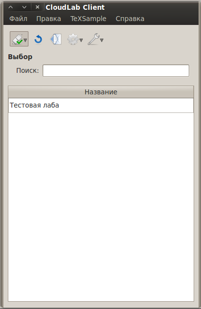

[Назад: 2. Лабораторный работы]
[Далее: 2.2. Отправка лабораторных работ]
Поиск и заргузка лабораторных работ
После того, как вы зарегистрируетесь и подключитесь к серверу, окно приложения будет иметь примерно следующий вид:

В списке отображаются названия лабораторных работ.
Поиск по ключевым словам
Чтобы быстрее найти интересующую вас лабораторную работу, можно ввести в поле "Поиск" ключевые слова.
Например, если вы ищите лабораторную работу по химии, введите слово "химия", если эта работа связана с
кислотами - добавьте слово "кислота". Ключевые слова необходимо разделять запятой. Можно (но не обязательно)
ставить после запятой пробелы. Итак, в нашем случае должно получиться нечто вроде "химия, кислота".
Приложение теперь будет отображать только те лабораторные работы, в названии или среди меток которых содержится хотя бы
одно из введенных слов. В качестве ключевых слов можно также указывать логин или имя автора.
Чтобы вновь увидеть весь список, просто очистите поле "Поиск".
Загрузка выбранной лабораторной работы
После того, как вы нашли интересующую вас работу, вы можете загрузить ее, выполнив двойной щелчок мышью по ней, либо
нажав правую клавишу мыши и выбрав пункт "Получить", как показано на рисунке ниже:
Выбранная лабораторная работа начнет загружаться. Если она достаточно велика, то через пару секунд будет показано
сообщение, в котором отображается процесс загрузки работы с сервера:
Процесс загрузки можно прервать, нажав на кнопку "Отмена". При этом связь с сервером будет потеряна и
придется подключиться заново вручную.
По окончании загрузки лабораторная работа будет запущена или открыта во встроенном браузере (в зависимости от ее типа).
Информация о лабораторной работе
Иногда перед загрузкой лабораторной работы имеет смысл посмотреть информацию о ней (например, узнать ее тип). Для этого
нужно лишь щелкнуть правой кнопкой мыши над нужной работой и выбрать пункт "Информация...". При этом появится
окно следующего вида:
Здесь можно увидеть название лабораторной работы, ее тип, присвоенные ей метки, отправителя, дату создания и последнего
обновления, список авторов, а также комментарий к работе и список групп, участникам которых она доступна.
Также отображается список прикрепленных к лаб. работе дополнительных файлов. При щелчке по имени файла он будет скачан
и открыт в программе по умолчанию (например, на системах семейства Windows файл .doc будет открыт при помощи Microsoft
Office).
Можно одновременно просматривать информацию о нескольких лабораторных работах.
[Назад: 2. Лабораторный работы]
[Далее: 2.2. Отправка лабораторных работ]